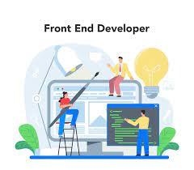

Front-end e suas 10 principais tecnologias
O Que é Front-End

Postado
28 de Fevereiro de 2023
O front-end de um site ou programa de software é a interface por meio da qual os usuários executam as principais ações. Um usuário que visita um aplicativo ou navegador pode acessar diferentes seções e funcionalidades.
O front-end de qualquer site ou aplicativo contém uma programação que disponibiliza determinados recursos aos usuários. Em comparação, um back-end possui processamento de dados e funções importantes em segundo plano, necessárias para fazer o aplicativo funcionar.
Vantagens da programação front-end
As vantagens da programação de front-end incluem:
• Desenvolvimento Rápido
A principal vantagem da programação front-end é que ela pode ser executada mais rapidamente. Os avanços tecnológicos de ponta e estruturas disponíveis para desenvolvimento front-end tornam as tarefas mais rápidas.
Como resultado, a criação do produto final leva muito menos tempo. Criar um front-end para um aplicativo que já tem um back-end pronto e robusto é uma proposta rápida e fácil. Como resultado, desenvolver front-ends totalmente funcionais raramente é um desafio para desenvolvedores experientes.
• Ambiente Seguro
O desenvolvimento inicial também é benéfico porque todas as estruturas de front-end oferecem um ambiente altamente seguro para codificação. É particularmente vantajoso para os usuários, pois eles podem preservar o código e os sites em vários navegadores.
• Resposta rápida
A nova tecnologia de estrutura usada pelos desenvolvedores permite que eles criem facilmente recursos de resposta rápida que facilitam a reação, resposta e funcionamento eficientes dos aplicativos.
Fonte: https://www.google.com/search?client=firefox-b-d&q=tecnologiahttps://www.google.com/search?client=firefox-b-d&q=tecnologias+para+front+ends+para+front+end
O que é front-end, para que serve e como aprender front-end
Início » Tecnologia
Construir uma carreira de sucesso em uma área promissora é o sonho de todo profissional.
Se o seu desejo é trabalhar com tecnologia da informação, saiba que o setor de TI é um dos que mais cresce no país e o que não faltam são oportunidades de crescimento.
Com diferentes campos de atuação, essa área ainda oferece diversos modelos de trabalho e remunerações bastante atrativas.
No conteúdo de hoje, falaremos sobre uma das especialidades mais populares entre as pessoas programadoras: o front-end.
A seguir, saiba o que é front-end, para que serve e como se capacitar como um(a) programador(a) front-end.
Vamos lá?
O que é front-end?
Front-end é toda parte da programação relativa à interface de uma aplicação.
Para que fique mais claro, imagine que você acessou o site de sua rede social favorita.
Lá você pode ver fotos, curtir algumas publicações, alterar seu status, fazer comentários, conversar por mensagens privadas… enfim, uma série de ações podem ser tomadas nestas áreas de interação.
Toda parte dinâmica de um site com a qual um usuário pode interagir é criada por um(a) desenvolvedor(a) front-end.
Em suma, como o próprio nome sugere, front-end é tudo aquilo que diz respeito à parte da frente de um site, aplicativo ou software; toda a aparência visível pelos seus visitantes.
A programação front-end também é chamada de client-side.
Para que serve front-end?
O front-end serve para que os usuários possam interagir com uma aplicação; em outras palavras, para construir a interface de utilização de um site, aplicativo ou software.
O desenvolvimento front-end é interpretado pelos navegadores ou sistemas operacionais e os ajuda a transmitir aqueles elementos a quem deseja interagir com eles.
O que é um desenvolvedor front-end?
O(a) desenvolvedor(a) front-end é o(a) profissional especializado(a) em programação front-end.
Este profissional pode ser um(a) programador(a) especializado(a) somente em front-end ou um(a) programador(a) full stack: aquele que pode atuar tanto como front-end quanto como back-end, sobre o que falaremos mais adiante.
Para possuir uma visão mais holística sobre toda parte visual de um site ou aplicação, é interessante que este(a) programador(a) possua alguns conhecimentos relativos a design gráfico e UX (ou experiência do usuário).
O que um(a) programador(a) front-end precisa saber?
Um(a) programador(a) front-end precisa saber diversas coisas antes de se especializar.
Como, por exemplo: noções de lógica de programação, linguagens de marcação, estilo e programação que constituem a base de toda estrutura virtual que conhecemos hoje, alguma noção sobre como estas estruturas se comportam em relação a bancos de dados, servidores e etc.
Abaixo, listarei e falarei mais detalhadamente sobre os principais conhecimentos que um(a) desenvolvedor(a) front-end deve ter.
Lógica de programação
Comumente ensinada junto com JavaScript, a lógica de programação é a organização racional de uma sequência de instruções voltadas à resolução de um problema ou ao desenvolvimento de um site, software ou aplicativo.
De modo geral, podemos explicar a lógica de programação como sendo o conceito-mãe de todos os outros conceitos quando se trata de tecnologia da informação, tanto para front quanto para back-end.
A grande importância em dominar este conceito é que, embora as linguagens de programação sejam muito diferentes entre si, a lógica por trás de todas elas é sempre a mesma. Logo, ao compreendê-la, todas as aprendizagens seguintes tornam-se muito mais sinples.
HTML
O surgimento do HTML foi o grande acontecimento responsável por estabelecer a estrutura em que a internet, como a conhecemos hoje foi construída.
O HTML é uma linguagem de marcação cuja sigla significa Hypertext Markup Language.
Grosso modo, a função do HTML é permitir que os navegadores sejam capazes de interpretar as informações contidas nos blocos de conteúdo com os quais o HTML trabalha, por isso ele é voltado apenas ao front-end.
Estes conteúdos são inseridos em tags e podem ser textos, imagens, vídeos e etc.
CSS
O CSS, ou Cascading Style Sheets, é uma linguagem de estilo que serve para alterar a aparência das páginas criadas em HTML.
Com esta linguagem é possível adicionar cores, efeitos, animações e múltiplos elementos visuais a uma página, criando sites mais dinâmicos e atraentes.
Sua criação veio da necessidade de tornar a internet mais esteticamente agradável, uma vez que o HTML só tem capacidade de criar páginas estáticas.
Unido ao HTML e ao JavaScript, compõe a tríade básica de tecnologias voltadas à criação front-end de páginas na web.
JavaScript
Mais jovem que seus antecessores HTML e CSS, o JavaScript é uma linguagem de programação criada para adicionar mais dinamismo e interatividade a sites que já estavam estruturados e estilizados.
A popularidade do JS nos anos 90 deu início a uma verdadeira revolução na maneira como sites eram criados até então, trazendo scripts capazes de gerar diferentes comportamentos que aumentaram a competitividade entre os sites da época.
Até hoje, esta é uma das mais importantes linguagens de programação, inclusive porque nela baseiam-se diversas bibliotecas e frameworks do mercado.
Por conta de sua rápida curva de aprendizagem e grande versatilidade, é possível utilizar JavaScript até mesmo em algumas aplicações de programação back-end.
Bootstrap
O Bootstrap é o framework front-end mais popular do mundo.
Ele oferece padrões de HTML, CSS e JavaScript, facilitando o trabalho dos programadores que trabalham com o desenvolvimento de aplicações semelhantes, economizando tempo e eliminando a necessidade de, por exemplo, recriar interfaces do zero.
Saber Bootstrap não é um pré-requisito indispensável para um front-end, mas pode ser uma grande ajuda.
Onde é aplicado, e onde posso trabalhar?
O front-end é aplicado em qualquer projeto que conte com a criação de uma interface gráfica.
Seja um site, aplicativo, software, sistema operacional ou qualquer outra tecnologia, se ela possui um campo de interação visível ao usuário, ela precisará contar com as habilidades de um(a) programador(a) front-end.
Este profissional pode trabalhar in house, ou seja, dentro de organizações de diversos nichos, ou em agências e consultorias prestadoras de serviço que atendem outras empresas como clientes.
O leque de opções é diverso: a carreira de programador também é bastante promissora para os profissionais autônomos e freelancers.
A possibilidade do trabalho remoto é um dos maiores atrativos desta área de atuação, permitindo que programadores(as) de todos os nichos possam, inclusive, trabalhar para outros países, aumentando ainda mais suas remunerações.
Quanto ganha um(a) desenvolvedor(a) front-end?
Segundo dados de uma pesquisa realizada pela GeekHunter sobre os salários para programadores em 2020, o salário de um(a) programador(a) front-end varia entre R$ 4.000,00 e R$ 13.000,00, a depender da experiência do profissional.
Ainda segundo a mesma pesquisa, um(a) programador(a) especializado(a) na linguagem JavaScript tem o salário médio de R$ 5.400,00.
Mas tudo isso depende de muitos fatores.
Quanto mais tecnologias este profissional domina, maiores são seus atrativos perante os contratantes.
A região onde este desenvolvedor trabalha também tem a sua influência, se não estivermos falando sobre o trabalho remoto.
Qual a diferença entre front-end e back-end?
Uma vez que o front-end cuida de toda interface de uma aplicação que possui interação com o usuário, o back-end trabalha com o outro lado: todo o sistema de operações por trás destas interações que as faz funcionar com eficiência.
Em um site de compras, por exemplo, toda a parte front-end funciona como a vitrine de uma loja. Os produtos, as categorias, as informações, etc.
Quando um consumidor escolhe um produto e parte para o checkout, ou seja, o pagamento deste item, todo um complexo ecossistema é acionado por trás deste processo.
Ele envolve o acesso ao estoque físico desta loja, a intermediação deste procedimento por um sistema de pagamentos online, a autorização por parte da instituição financeira e outros.
Para que todas estas ações funcionem simultaneamente e sem erros, é necessária a utilização de uma plataforma de e-commerce responsável por acionar diferentes atividades ao mesmo tempo.
Criar este tipo de aplicação é trabalho de um(a) desenvolvedor(a) back-end.
É possível ser front-end e back-end?
Sim. E a este tipo de profissional damos o nome de desenvolvedor(a) full stack.
Ao começar sua preparação para se tornar uma pessoa programadora, você pode escolher uma especialização como front, back, DevOps, etc, ou estudar tanto as linguagens client-side quanto server-side e se tornar um full stack.
Apesar da vantagem de possuir uma visão completa sobre qualquer projeto, podendo prever e resolver problemas em diferentes frentes de tecnologia, este tipo de profissional pode carregar uma carga mais pesada ao precisar manter-se atualizado em diferentes setores.
Como aprender front-end?
Como consequência do avanço tecnológico e do próprio amadurecimento do setor de TI, existe hoje, na internet, muito conteúdo voltado ao aprendizado da programação.
É possível estudar programação em escolas voltadas exclusivamente à capacitação de pessoas programadoras; em workshops, cursos online, iniciativas de aprendizagem incentivadas por grandes empresas e como autodidata.
Fonte: https://kenzie.com.br/blog/front-end/
Estas são as dez melhores linguagens de front-end.
- HTML
- CSS
- Javascript
- React
- Vue
- TypeScript
- Elm
- JQuery
- Angular
- Swift
Todos os direitos reservados